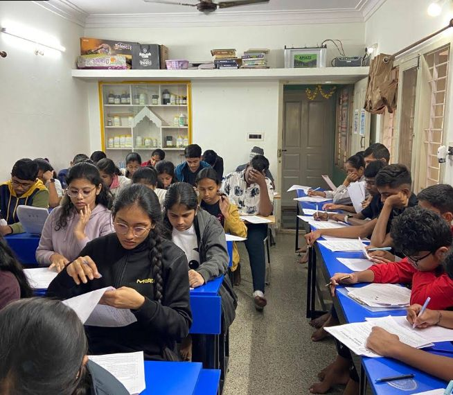

Small batches, weekly tests and chapter-wise tracking for CET aspirants in Bedarahalli, Bengaluru.
Root Classes aligns Karnataka CET preparation with the state syllabus, timed mocks and counselling guidance for college choice.

| Phase | What happens | Timing |
|---|---|---|
| Syllabus | PUC-aligned notes and class tests | [ADD] |
| Timed mocks | Fortnightly full mocks | [ADD] |
| Counselling | Rank analysis and college guidance | [ADD] |
All timings, fees and syllabus details are samples. [ADD real details]